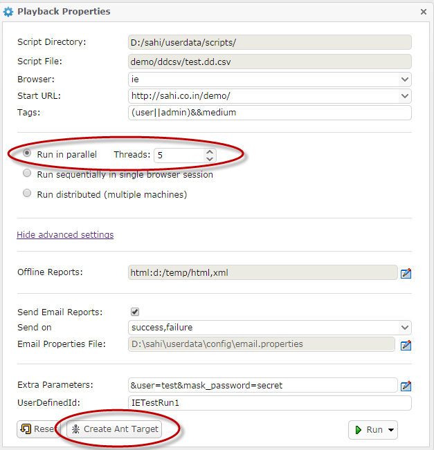

Sahi Pro - Playback on Desktop
abstract
This section describes various ways of playing back Sahi scripts.
Playback via Editor (new in 6.0.0)
The enhanced Editor (available from v6.0.0) allows the user to playback scripts, suites, data driven suites and scenarios from a web interface.The user can choose to playback on a single machine or distribute across machines. All command line scenarios (testrunner, drun, drun_different_master) can be tested from the Editor Playback UI.
One can also generate ANT xml content for various scenarios from the Playback UI. The xml content needs to be copied and saved in an xml file. The XML file can then be run through ANT.
Example: If we copy the generated ANT xml content to demo.xml, one can launch the ANT target as ant -f demo.xml
Please refer to the Playback section of the Editor documentation for more details on the Playback UI.
Playback via Sahi Controller
To playback via Controller, go to the Playback tab, choose the script to play and click "Play".As the script executes, Sahi will display the steps executed and also log them into a database.
You can view the logs by clicking on "Logs" link at the bottom of the Controller.
Playback via testrunner
testrunner.bat and testrunner.sh files allow running scripts from the command line.- Open a command prompt and cd to sahi/userdata/bin
(or click on the "Bin" link on the Sahi Dashboard)
- Run testrunner.bat to see the syntax
D:\sahi_pro\userdata\bin>testrunner
--
Usage: testrunnerFile path is relative to userdata/scripts
Multiple browsers can be specified using +. Eg. ie+firefox
tags are used only if the input suite is a csv file
--
Example:
testrunner demo/demo.suite http://sahi.co.in/demo/ firefox
testrunner demo/sahi_demo.sah http://sahi.co.in/demo/ ie
testrunner demo/sahi_demo.sah http://sahi.co.in/demo/ ie+firefox
testrunner demo/testcases/testcases_sample.csv http://sahi.co.in/demo/ ie "(user||admin)&&medium"
testrunner demo/ddcsv/test.dd.csv http://sahi.co.in/demo/ ie "(user||admin)&&medium"
--
D:\sahi_pro\userdata\bin> -
To run your suite, use,
You can specify the browser you want to run it on.C:\sahi\userdata\bin>testrunner.bat myapp.suite http://myappdomain/startpage.jsp firefox
-
Parameters other than suite, startURL and browserType can be modified by editing
testrunner.bat
-
To set the number of parallel browsers to execute the script in, modify
To run in one thread only, ie. to run scripts one after the other sequentially, useSET THREADS=5
SET THREADS=1 -
Sahi normally opens and closes the browser for each script.
To execute all scripts sequentially without closing and reopening browsers, use
SET THREADS=1 SET SINGLE_SESSION=true -
Sahi, by default, writes logs to the database only.
To force it to write logs to the filesystem, use
html and xml logs will be created in theSET LOGS_INFO=html,xmlsahi/userdata/logs/playbackfolder
To force it to write logs to specific file locations, use,
SET LOGS_INFO=html:D:/reports/htmllogs/,xml:D:/reports/xmllogs/
Output formats available are html,xml,junit,excel
The format to specify LOGS_INFO is
reportType1:filePath1,reportType2,reportType3:filePath3,... -
When a Sahi suite is run, some scripts may fail because of environment reasons or due to browser crashes.
A natural next step for testers is to verify the failure by running the script again.
Sahi now automatically creates a suite of all failed scripts. The name of the failed suite has_failedappended to the filename.
For example if you ran a suiteadmin/admin.suitefailed suite will be created asadmin/admin_failed.suite
Foradmin/admin.dd.csv, it will beadmin/admin_failed.dd.csv
This failed suite file can then be run to verify only the failed testcases.
-
Sahi can send out emails at the end of a suite run.
Set the following properties in testrunner.bat file.
Email specific parameters like username, password etc. are defined inSET SEND_EMAIL_REPORT=true SET EMAIL_TRIGGER=success,failure SET EMAIL_PROPERTIES=email.properties SET EMAIL_PASSWORD_HIDDEN=truesahi/userdata/bin/email.propertiesfile.
-
To set the number of parallel browsers to execute the script in, modify
info
Browser names are defined in sahi/userdata/browser-types-xml
testrunner.bat and testrunner.sh use the TestRunner java class internally.
testrunner.bat and testrunner.sh use the TestRunner java class internally.
Distributed playback via drun
Sahi Pro can distribute and run tests on multiple machines (nodes).
The machine which distributes the scripts and manages the distributed run is referred to as the
Master. All Dashboard logs are visible from the Master. The other machines are called Slaves. Any machine in the distributed environment can serve as the Master. The machine which launches the distributed run is referred to as the Initiator.Sahi provides a couple of batch files -
drun.bat and drun_different_master.bat (and equivalent shell scripts). They allow running test scripts on multiple machines from the command line.-
drun.batshould be used when theMasterandInitiatorare the same machine.
-
drun_different_master.batshould be used when theMasteris different from theInitiator.
danger
Please ensure that the same SahiPro version has been installed on all the machines participating in the distributed run.
drun
- Sahi distributes the scripts to different machines based on their capacity and availability of browsers. Please note that Sahi should be running on each of the nodes. Also, on each machine, the browser paths must be correctly specified.
- Open
sahi_pro/userdata/bin/drun.bat(drun.sh on linux) using any editor. -
SOURCE_SCRIPTS_PATH points to the folder that contains ALL the scripts to be run. It should be relative to
sahi_pro/userdatafolder OR it should be an absolute path.
For Windows:
For Linux:SET SOURCE_SCRIPTS_PATH=scripts
export SOURCE_SCRIPTS_PATH=scripts -
Configure the NODES variable to contain all the machines on which the tests should run. The command to set the nodes in Windows and Linux respectively are:
For Windows:
For Linux:SET NODES=localhost:9999,othermachine:9999,thirdmachine:9999
export NODES=localhost:9999,othermachine:9999,thirdmachine:9999info The nodes may or may not include theMastermachine (localhost). If theMastermachine is not included, scripts will not be run on theMaster.
warning "othermachine" and "thirdmachine" are placeholders to illustrate usage. Replace them with actual machine names. The nodes can contain 1 or more machines.
-
When a Sahi suite is run, some scripts may fail because of environment reasons or due to browser crashes.
A natural next step for testers is to verify the failure by running the script again.
Sahi now automatically creates a suite of all failed scripts. The name of the failed suite has_failed_<browsertype>appended to the filename.
For example if you ran a suiteadmin/admin.suitein Chrome, failed suite will be created asadmin/admin_failed_chrome.suite
Foradmin/admin.dd.csv, it will beadmin/admin_failed_chrome.dd.csv
This failed suite file can then be run to verify only the failed scripts.
-
Sahi can send a mail summarizing the playback. The variable SEND_EMAIL_REPORT can be set as true or false. If true, Sahi sends the mail.
For Windows:
For Linux:SET SEND_EMAIL_REPORT=true
export SEND_EMAIL_REPORT=true -
Sahi can send a mail based on success or failure or in both the cases. This condition can be set using the EMAIL_TRIGGER variable.
For Windows:
For Linux:SET EMAIL_TRIGGER=success,failure
export EMAIL_TRIGGER=success,failure - The relative path to the properties file containing information about the mail such as sender, recipient, host, port etc. can be set using the EMAIL_PROPERTIES variable.
- Passwords can be hidden or shown from the console and logs by toggling the EMAIL_PASSWORD_HIDDEN variable.
It can be set as true or false. If true, Sahi hides the password from Sahi console and logs. -
Custom fields can be passed to the scripts using the CUSTOM_FIELDS variable. More than one custom field can be passed. Replace the custom field keys and values as appropriate.
For Windows:
For Linux:SET CUSTOM_FIELDS=-customField customValue -anotherCustomField "another value"
export CUSTOM_FIELDS=-customField customValue -anotherCustomField "another value"
info Specifying custom fields is not mandatory.
-
The end user can pass a specific id for each suite/script run using the USER_DEFINED_ID variable.
For Windows:
For Linux:SET USER_DEFINED_ID=-userDefinedId "Some Id"
export USER_DEFINED_ID=-userDefinedId "Some Id"
Replace the value "Some Id" as appropriate.
warning The key should remain as userDefinedId.
info Specifying user defined id is not mandatory.
-
Sahi can set offline logs to be generated in
xml,html,junit,tm6andexceltypes. The default type ishtml.
For Windows:
For Linux:SET LOGS_INFO=xml,html
export LOGS_INFO=xml,html - To execute the scripts using drun.bat, open a command window and go to the
<sahi_home>/userdata/bindirectory. This can also be done easily by clicking the bin link on the dashboard. - Run drun.bat to see the syntax.
D:\sahi_pro\userdata\bin>drun
--
NOTE: Use this batch file only if this machine is same as the Master machine. Else, use drun_different_master.bat instead.
--
Usage: drunFile path is relative to userdata/scripts
Multiple browsers can be specified using +. Eg. ie+firefox
tags are used only if the input suite is a csv file
--
Example:
drun demo/demo.suite http://sahi.co.in/demo/ firefox
drun demo/sahi_demo.sah http://sahi.co.in/demo/ ie
drun demo/sahi_demo.sah http://sahi.co.in/demo/ ie+firefox
drun demo/testcases/testcases_sample.csv http://sahi.co.in/demo/ ie "(user||admin)&&medium"
drun demo/ddcsv/test.dd.csv http://sahi.co.in/demo/ ie "(user||admin)&&medium"
--
D:\sahi_pro\userdata\bin>
In the usage above,
-
The first argument is the suite or script path. This path is always relative to the path set in SOURCE_SCRIPTS_PATH.
-
The second argument is the Start URL.
-
The third argument is the Browser Type.
-
Tags (the fourth argument) will be used only when running a data driven suite (.dd.csv) or a CSV as suite with tags.
Tags are specified to run specific scripts/testcases from the suite.
eg. If tags are specified as "(user||admin)&&medium", all the scripts which have 'medium' tag and 'admin' or 'user' (or both) tag will be run
-
The first argument is the suite or script path. This path is always relative to the path set in SOURCE_SCRIPTS_PATH.
drun_different_master
This should be used when theMaster is different from the Initiator.A typical case where you would use this or the ANT equivalent, is when you have a continuous integration build server that is not capable of launching any UI.
The build server will contain all the scripts but since it cannot launch any UI, it cannot run Sahi tests. In such a case, Sahi can be run on other machines and
drun_different_master can be used on the integration build server to trigger the Sahi tests on these machines.drun_different_master does the following.-
It first syncs the contents of scripts folder from the
Initiatorto a staging folder on theMaster.
-
It then distributes the scripts from the staging folder of the
Masterto various nodes and runs the tests.
-
If offline logs are requested, the logs are copied over from the
Masterto theInitiatorafter the run is over.
drun_different_master in more detail.- Sahi (running on the
Master) distributes the scripts to different machines based on their capacity and availability of browsers. Please note that Sahi should be running on each of the nodes. Also, on each machine, the browser paths must be correctly specified.
info Sahi does not need to be installed on theInitiatormachine.
-
The following directory structure is assumed on the
Initiatormachine. The requisite files like ant-sahi.jar should be copied over from a SahiPro installation. The directory structure of the files is the same in the SahiPro installation.
<TOP_LEVEL_FOLDER> lib ant-sahi.jar logs userdata bin drun_different_master.bat setjava.bat email.properties scripts <ALL YOUR SCRIPT FOLDERS AND SCRIPTS> - Open
<sahi_home>/userdata/bin/drun_different_master.bat(drun_different_master.sh on linux) using any Editor. - MASTER_HOST should point to the Master machine.
For Windows:
For Linux:SET MASTER_HOST=machine2
export MASTER_HOST=machine2danger Make sure you change "machine2" to the actual machine name
-
INITIATOR_ORIGIN_FOLDER is the path to the base folder containing the various scripts. With the above assumed directory structure, it would point to
<TOP_LEVEL_FOLDER>/userdata/scripts.
info The default value need not be changed.
-
MASTER_STAGING_PATH refers to the Staging folder on the Master machine to which the contents of INITIATOR_ORIGIN_FOLDER will be first synced to. Distribution of scripts will happen from MASTER_STAGING_PATH.
info The default value need not be changed.
-
Configure the NODES variable to contain all the machines on which the tests should run. The command to set the nodes in Windows and Linux respectively are:
For Windows:
For Linux:SET NODES=machine2:9999,machine3:9999,machine4:9999
export NODES=machine2:9999,machine3:9999,machine4:9999info The nodes may or may not include theMastermachine. If theMastermachine is not included, scripts will not be run on theMaster.
danger Do not include localhost (theInitiator) here since Sahi may not be installed on theInitiator. If you want localhost as one of the nodes, run drun instead.
warning "machine2", "machine3" and "machine4" are placeholders to illustrate usage. Replace them with actual machine names. The nodes can contain 1 or more machines.
-
When a Sahi suite is run, some scripts may fail because of environment reasons or due to browser crashes.
A natural next step for testers is to verify the failure by running the script again.
Sahi now automatically creates a suite of all failed scripts. The name of the failed suite has_failed_<browsertype>appended to the filename.
For example if you ran a suiteadmin/admin.suitein Chrome, failed suite will be created asadmin/admin_failed_chrome.suite
Foradmin/admin.dd.csv, it will beadmin/admin_failed_chrome.dd.csv
This failed suite file can then be run to verify only the failed scripts.
-
Sahi can send a mail summarizing the playback. The variable SEND_EMAIL_REPORT can be set as true or false. If true, Sahi sends the mail.
For Windows:
For Linux:SET SEND_EMAIL_REPORT=true
export SEND_EMAIL_REPORT=true -
Sahi can send a mail based on success or failure or in both the cases. This condition can be set using the EMAIL_TRIGGER variable.
For Windows:
For Linux:SET EMAIL_TRIGGER=success,failure
export EMAIL_TRIGGER=success,failure - The relative path to the properties file containing information about the mail such as sender, recipient, host, port etc. can be set using the EMAIL_PROPERTIES variable.
- Passwords can be hidden or shown from the console and logs by toggling the EMAIL_PASSWORD_HIDDEN variable.
It can be set as true or false. If true, Sahi hides the password from Sahi console and logs. -
Custom fields can be passed to the scripts using the CUSTOM_FIELDS variable. More than one custom field can be passed. Replace the custom field keys and values as appropriate.
For Windows:
For Linux:SET CUSTOM_FIELDS=-customField customValue -anotherCustomField "another value"
export CUSTOM_FIELDS=-customField customValue -anotherCustomField "another value"
info Specifying custom fields is not mandatory.
-
The end user can pass a specific id for each suite/script run using the USER_DEFINED_ID variable.
For Windows:
For Linux:SET USER_DEFINED_ID=-userDefinedId "Some Id"
export USER_DEFINED_ID=-userDefinedId "Some Id"
Replace the value "Some Id" as appropriate.
warning The key should remain as userDefinedId.
info Specifying user defined id is not mandatory.
-
Sahi can set offline logs to be generated in
xml,html,junit,tm6andexceltypes. The default type ishtml. These logs will be generated on theMasterand pulled back to theInitiator, since the user would want to see the logs on theInitiator.
The following set of commands illustrate how HTML and XML logs can be generated.
For Windows:
For Linux:SET DATESTAMP=%DATE:~10,4%_%DATE:~4,2%_%DATE:~7,2% SET TIMESTAMP=%TIME:~0,2%_%TIME:~3,2%_%TIME:~6,2% SET DATEANDTIME=%DATESTAMP%_%TIMESTAMP% SET MASTER_HTMLLOGS_DIR=logs/temp/html/%DATEANDTIME% SET MASTER_XMLLOGS_DIR=logs/temp/xml/%DATEANDTIME% SET LOGS_INFO=html:%MASTER_HTMLLOGS_DIR%,xml::%MASTER_XMLLOGS_DIR% SET INITIATOR_OUTPUT_HTMLLOGS_DIR=%TOP_LEVEL_FOLDER%/logs/html/%DATEANDTIME% SET INITIATOR_OUTPUT_XMLLOGS_DIR=%TOP_LEVEL_FOLDER%/logs/xml/%DATEANDTIME%
export MASTER_HTMLLOGS_DIR=logs/temp/html export MASTER_XMLLOGS_DIR=logs/temp/xml export LOGS_INFO=html:$MASTER_HTMLLOGS_DIR,xml:$MASTER_XMLLOGS_DIR export INITIATOR_OUTPUT_HTMLLOGS_DIR=$TOP_LEVEL_FOLDER/logs/html export INITIATOR_OUTPUT_XMLLOGS_DIR=$TOP_LEVEL_FOLDER/logs/xmlinfo The default values can be left as is.
- To execute the scripts using drun_different_master.bat, open a command window and go to the
<sahi_home>/userdata/bindirectory. This can also be done easily by clicking the bin link on the dashboard. - Run drun_different_master.bat to see the syntax.
D:\sahi_pro\userdata\bin>drun_different_master.bat
--
NOTE: Use this batch file only if this machine is different from the Master machine. Else, use drun.bat instead.
--
Usage: drun_different_master.batFile path is relative to userdata/scripts
Multiple browsers can be specified using +. Eg. ie+firefox
tags are used only if the input suite is a csv file
--
Example:
drun_different_master.bat demo/demo.suite http://sahi.co.in/demo/ firefox
drun_different_master.bat demo/sahi_demo.sah http://sahi.co.in/demo/ ie
drun_different_master.bat demo/sahi_demo.sah http://sahi.co.in/demo/ ie+firefox
drun_different_master.bat demo/testcases/testcases_sample.csv http://sahi.co.in/demo/ ie "(user||admin)&&medium"
drun_different_master.bat demo/ddcsv/test.dd.csv http://sahi.co.in/demo/ ie "(user||admin)&&medium"
--
D:\sahi_pro\userdata\bin>
In the usage above,
-
The first argument is the suite or script path. This path is always relative to the path set in SOURCE_SCRIPTS_PATH.
-
The second argument is the Start URL.
-
The third argument is the Browser Type.
-
Tags (the fourth argument) will be used only when running a data driven suite (.dd.csv) or a CSV as suite with tags.
Tags are specified to run specific scripts/testcases from the suite.
eg. If tags are specified as "(user||admin)&&medium", all the scripts which have 'medium' tag and 'admin' or 'user' (or both) tag will be run.
-
The first argument is the suite or script path. This path is always relative to the path set in SOURCE_SCRIPTS_PATH.
Playback via ANT
warning
demo.xml has been removed from the Sahi installation. Use the Editor Playback UI to generate the ANT xml content and create an xml with that content in your
<SAHI_INSTALLATION_FOLDER>.Playback on a single machine
One can now use the Editor Playback UI to generate the ANT xml automatically. Refer here for details on the UI.- Choose the
Run in paralleloption. - Click the
Create Ant Targetbutton

This will generate the contents of an ANT xml file. If you wish to add a Retry target as well, click on the
Show Retry Target button on the next window.Once the ANT xml content is generated, copy the content to an empty file and save the file as an xml, say
demo.xml in your <SAHI_INSTALLATION_FOLDER>.You can now run the default ANT target in the xml file as
ant -f demo.xmlNOTE: The main target is the default target, so you do not need to specify the target when running the xml.
The above UI would generate an ANT xml that looks like the following.
<?xml version="1.0" encoding="ISO-8859-1"?>
<!--
/**
* Copyright Tyto Software Pvt. Ltd.
*/
-->
<project name="demo" default="runtestsie">
<taskdef name="sahi" classname="net.sf.sahi.ant.RunSahiTask" classpath="lib/ant-sahi.jar"/>
<target name="set_properties_ie">
<property name="scriptDir" value="D:/sahi/userdata/scripts/"/>
<property name="scriptName" value="demo/ddcsv/test.dd.csv"/>
<property name="browser" value="ie"/>
<property name="sendemail" value="true"/>
<property name="emailtrigger" value="success,failure"/>
<property name="emailproperties" value="D:\sahi\userdata\config\email.properties"/>
<property name="emailPasswordHidden" value="true"/>
<property name="baseURL" value="http://sahi.co.in/demo/"/>
<property name="host" value="localhost"/>
<property name="port" value="9999"/>
<property name="singlesession" value="false"/>
<property name="threads" value="5"/>
<property name="failedSuite" value="demo/ddcsv/test_failed_${browser}.dd.csv"/>
</target>
<target name="runtestsie" depends="set_properties_ie">
<sahi suite="${scriptDir}${scriptName}"
browsertype="${browser}"
sendemail="${sendemail}"
emailtrigger="${emailtrigger}"
emailproperties="${emailproperties}"
emailPasswordHidden="${emailPasswordHidden}"
baseurl="${baseURL}"
sahihost="${host}"
sahiport="${port}"
failureproperty="sahi.failed.${browser}"
haltonfailure="false"
singlesession="${singlesession}"
threads="${threads}"
tags="(user||admin)&&medium"
userDefinedId="IETestRun1">
<!-- Custom fields - add, edit or remove as required -->
<customfield key="user" value="test"/>
<customfield key="mask_password" value="secret"/>
<!-- Offline reports -->
<report type="html" logdir="d:/temp/html"/>
<report type="xml"/>
</sahi>
<antcall target="failsahiie"/>
</target>
<target name="failsahiie" depends="set_properties_ie" if="sahi.failed.${browser}">
<fail message="Sahi tests failed on browser ${browser}!"/>
</target>
</project>info
If you choose the
Run sequentially in single browser session option, singlesession attribute would be set to true. Everything else remains the same.danger
Please NOTE:
The above XML content is for illustration purposes only. Use the Editor UI to generate the ANT xml content and create an xml with that content in your
The above XML content is for illustration purposes only. Use the Editor UI to generate the ANT xml content and create an xml with that content in your
<SAHI_INSTALLATION_FOLDER>.Let us look at the important attributes used in the ANT xml target (specified in bold above).
Attributes and their description
info
taskdef classpath is relative to where ant is run from.
| scriptDir | Specifies the path to the scripts folder. Can be the absolute path or a path relative to the userdata folder |
| scriptName | Relative path to the script/suite/data driven suite. It is relative to scriptDir. |
| browser | The browser on which the suite file plays back |
| baseurl | Specifies URL which is the starting URL for all the scripts in the suite |
| host | Hostname of the server where Sahi is running (Can be IP as well) |
| port | Port on which Sahi is running |
| threads | Number of simultaneous browser instances on which sahi tests will be run. |
| singlesession | Since this is a parallel run, it will be "false". If "true", runs all scripts in a single browser without closing it between scripts. |
| sendemail | Takes "true" or "false". If "true", Sahi sends an email summarizing the playback. |
| emailtrigger | Takes "success" or "failure" or "success,failure". Triggers email in case of SUCCESS, FAILURE and both cases respectively. |
| emailproperties | Path to the properties file that contains details about the mail viz. information about the sender, receiver, host, port, subject, content etc. Path can be the absolute path or relative to where this ant target is run from. |
| failedsuite | Relative path to the failed suite. It is relative to scriptDir. It is of the form <suitename>_failed_<browser>.suite |
| tags | Tags should be specified only for dd.csv and .csv suites. Tags are specified so that it is easy to choose which scripts/testcases to run. eg. in the target above, all the scripts which have 'medium' tag and 'admin' or 'user' (or both) tag will be run. |
| userdefinedid | The unique id that the user can pass to differentiate a suite from others. This is an optional attribute. |
| customfield | Custom fields can be passed to the scripts using the customfield attribute. More than one custom field can be passed, by specifying additional customfield entries. Replace the custom field keys and values as appropriate. This is an optional attribute. |
| report | Sahi can set offline logs to be generated in xml, html, junit, tm6 and excel types. The default type is html. Add separate entries for each report type as required. This is an optional attribute. |
Command to execute the above ANT target
ant -f demo.xmlDistributed playback via ANT
Distributed playback can be achieved through ANT targets as well.These targets can be used from Jenkins to distribute the scripts of a suite on multiple machines.
The machine which distributes the scripts and manages the distributed run is referred to as the
Master. All logs are visible from the Master. The other machines are called Slaves. Any machine in the distributed environment can serve as the Master. The machine which launches the distributed run is referred to as the Initiator.Distributed run on the same Master
Use the Editor Playback UI to generate the ANT xml content.In the Editor Playback UI,
- Choose
Run distributed (multiple machines)option. - Leave the
Use Different Mastercheckbox unchecked. - Click on
Create Ant Targetbutton.
This will generate the contents of an ANT xml file. If you wish to add a Retry target as well, click on the
Show Retry Target button on the next window.Once the ANT xml content is generated, copy the content to an empty file and save the file as an xml, say
demo.xml in your <SAHI_INSTALLATION_FOLDER>.You can now run the default ANT target in the xml file as
ant -f demo.xmlNOTE: The main target is the default target, so you do not need to specify the target when running the xml.
The above UI would generate an ANT xml that looks like the following.
<?xml version="1.0" encoding="ISO-8859-1"?>
<!--
/**
* Copyright Tyto Software Pvt. Ltd.
*/
-->
<project name="demo" default="drunie">
<taskdef name="sahi" classname="net.sf.sahi.ant.RunSahiTask" classpath="lib/ant-sahi.jar"/>
<taskdef name="sahid" classname="in.co.sahi.ant.DAntRunner" classpath="lib/ant-sahi.jar"/>
<target name="set_timestamp">
<tstamp>
<format property="ts" pattern="yyyy_MM_dd_HH_mm_ss" locale="en, IN"/>
</tstamp>
</target>
<target name="set_properties_common">
<property name="scriptDir" value="D:/sahi/userdata/scripts/"/>
<property name="host" value="localhost"/>
<property name="port" value="9999"/>
<property name="runId" value="${ts}"/>
</target>
<target name="set_properties_ie" depends="set_properties_common">
<property name="scriptName" value="demo/ddcsv/test.dd.csv"/>
<property name="browser" value="ie"/>
<property name="sendemail" value="true"/>
<property name="emailtrigger" value="success,failure"/>
<property name="emailproperties" value="D:\sahi\userdata\config\email.properties"/>
<property name="emailPasswordHidden" value="true"/>
<property name="baseURL" value="http://sahi.co.in/demo/"/>
<property name="failedSuite" value="demo/ddcsv/test_failed_${browser}.dd.csv"/>
</target>
<target name="drunie" depends="set_properties_ie, set_timestamp">
<sahid suite="temp/scripts/copied/${scriptName}"
sendEmail="${sendemail}"
emailtrigger="${emailtrigger}"
emailProperties="${emailproperties}"
emailPasswordHidden="${emailPasswordHidden}"
baseurl="${baseURL}"
sahihost="${host}"
sahiport="${port}"
failureproperty="sahi.failed.${browser}"
haltonfailure="false"
originalSuitePath="${scriptDir}${scriptName}"
browsertype="${browser}"
origScriptsPath="${scriptDir}"
copiedScriptsPath="temp/scripts/copied"
runId="${runId}"
ignorePattern=".*(svn|copied).*"
tags="(user||admin)&&medium"
userDefinedId="IETestRun1">
<!-- Custom fields - add, edit or remove as required -->
<customfield key="user" value="test"/>
<customfield key="mask_password" value="secret"/>
<!-- Scripts will be distributed across all the nodes. The nodes may or may not include the Master machine -->
<node host="localhost" port="9999"/>
<node host="192.168.1.29" port="9999"/>
<!-- Offline reports -->
<report type="html" logdir="d:/temp/html"/>
<report type="xml"/>
</sahid>
<antcall target="failsahiie"/>
</target>
<target name="failsahiie" depends="set_properties_ie" if="sahi.failed.${browser}">
<fail message="Sahi tests failed on browser ${browser}!"/>
</target>
</project>danger
Please NOTE:
The above XML content is for illustration purposes only. Use the Editor UI to generate the ANT xml content and create an xml with that content in your
The above XML content is for illustration purposes only. Use the Editor UI to generate the ANT xml content and create an xml with that content in your
<SAHI_INSTALLATION_FOLDER>.Let us look at the important attributes used in the ANT xml target (specified in bold above).
Attributes and their description
info
taskdef classpath is relative to where ant is run from.
| scriptDir | Specifies the path to the scripts folder. Can be the absolute path or a path relative to the userdata folder |
| host | Hostname of the server where Sahi is running (Can be IP as well). Leave this as localhost |
| port | Port on which Sahi is running |
| scriptName | Relative path to the script/suite/data driven suite. It is relative to scriptDir. |
| browser | The browser on which the suite file plays back |
| baseurl | Specifies URL which is the starting URL for all the scripts in the suite |
| sendemail | Takes "true" or "false". If "true", Sahi sends an email summarizing the playback. |
| emailtrigger | Takes "success" or "failure" or "success,failure". Triggers email in case of SUCCESS, FAILURE and both cases respectively. |
| emailproperties | Path to the properties file that contains details about the mail viz. information about the sender, receiver, host, port, subject, content etc. Path can be the absolute path or relative to where this ant target is run from. |
| failedsuite | Path to the failed suite file. It is relative to scriptDir. It is of the form <suitename>_failed_<browser>.suite |
| tags | Tags should be specified only for dd.csv and .csv suites. Tags are specified so that it is easy to choose which scripts/testcases to run. eg. in the target above, all the scripts which have 'medium' tag and 'admin' or 'user' (or both) tag will be run. |
| userdefinedid | The unique id that the user can pass to differentiate a suite from others. This is an optional attribute. |
| node | Each node attribute specifies a machine on which the tests should run. Add as many node entries as there are machines to run. The nodes may or may not include the Master machine (localhost). If the Master machine is not included, scripts will not be run on the Master. There can be 1 or more nodes. |
| customfield | Custom fields can be passed to the scripts using the customfield attribute. More than one custom field can be passed, by specifying additional customfield entries. Replace the custom field keys and values as appropriate. This is an optional attribute. |
| report | Sahi can set offline logs to be generated in xml, html, junit, tm6 and excel types. The default type is html. Add separate entries for each report type as required. This is an optional attribute. |
Command to execute the above ANT target
ant -f demo.xmlDistributed run on a different Master
Use the Editor Playback UI to generate the ANT xml content.In the Editor Playback UI,
- Choose
Run distributed (multiple machines)option. - Check the
Use Different Mastercheckbox and choose the Master details. - Click on
Create Ant Targetbutton.
This will generate the contents of an ANT xml file. If you wish to add a Retry target as well, click on the
Show Retry Target button on the next window.Once the ANT xml content is generated, copy the content to an empty file and save the file as an xml, say
demo.xml in your <SAHI_INSTALLATION_FOLDER>.You can now run the default ANT target in the xml file as
ant -f demo.xmlNOTE: The main target is the default target, so you do not need to specify the target when running the xml.
The above UI would generate an ANT xml that looks like the following.
<?xml version="1.0" encoding="ISO-8859-1"?>
<!--
/**
* Copyright Tyto Software Pvt. Ltd.
*/
-->
<project name="demo" default="drun_different_master">
<taskdef name="sahi" classname="net.sf.sahi.ant.RunSahiTask" classpath="lib/ant-sahi.jar"/>
<taskdef name="sahid" classname="in.co.sahi.ant.DAntRunner" classpath="lib/ant-sahi.jar"/>
<taskdef name="sahisync" classname="in.co.sahi.ant.DAntSync" classpath="lib/ant-sahi.jar"/>
<taskdef name="sahipull" classname="in.co.sahi.ant.DAntPull" classpath="lib/ant-sahi.jar"/>
<target name="set_timestamp">
<tstamp>
<format property="ts" pattern="yyyy_MM_dd_HH_mm_ss" locale="en, IN"/>
</tstamp>
</target>
<target name="set_properties_common">
<property name="scriptDir" value="D:/sahi/userdata/scripts/"/>
<property name="masterhost" value="192.168.1.30"/>
<property name="masterport" value="9999"/>
<property name="runId" value="${ts}"/>
</target>
<target name="drun_different_master" depends="set_properties_common, set_timestamp">
<sequential>
<sahisync originFolder="${scriptDir}" destFolder="temp/scripts/staging" ignorePattern=".*(svn|copied).*">
<node host="${masterhost}" port="${masterport}"/>
</sahisync>
<antcall target="drunie"/>
</sequential>
</target>
<target name="set_properties_ie" depends="set_properties_common">
<property name="scriptName" value="demo/ddcsv/test.dd.csv"/>
<property name="browser" value="ie"/>
<property name="sendemail" value="true"/>
<property name="emailtrigger" value="success,failure"/>
<property name="emailproperties" value="D:\sahi\userdata\config\email.properties"/>
<property name="emailPasswordHidden" value="true"/>
<property name="baseURL" value="http://sahi.co.in/demo/"/>
<property name="failedSuite" value="demo/ddcsv/test_failed_${browser}.dd.csv"/>
</target>
<target name="drunie" depends="set_properties_ie, set_timestamp">
<sahid suite="temp/scripts/copied/${scriptName}"
sendEmail="${sendemail}"
emailtrigger="${emailtrigger}"
emailProperties="${emailproperties}"
emailPasswordHidden="${emailPasswordHidden}"
baseurl="${baseURL}"
sahihost="${masterhost}"
sahiport="${masterport}"
failureproperty="sahi.failed.${browser}"
haltonfailure="false"
originalSuitePath="temp/scripts/staging/${scriptName}"
browsertype="${browser}"
origScriptsPath="temp/scripts/staging/"
copiedScriptsPath="temp/scripts/copied"
runId="${runId}"
ignorePattern=".*(svn|copied).*"
tags="(user||admin)&&medium"
userDefinedId="IETestRun1">
<!-- Custom fields - add, edit or remove as required -->
<customfield key="user" value="test"/>
<customfield key="mask_password" value="secret"/>
<!-- Scripts will be distributed across all the nodes. The nodes may or may not include the Master machine -->
<node host="192.168.1.28" port="9999"/>
<node host="192.168.1.29" port="9999"/>
<!-- Offline reports -->
<report type="html" logdir="logs/temp/html/${ts}"/>
<report type="xml" logdir="logs/temp/xml/${ts}"/>
</sahid>
<!-- Pull the logs from the Master onto the Initiator machine -->
<sahipull sourceHost="192.168.1.30" sourcePort="9999" originFolder="logs/temp/html/${ts}" destFolder="d:/temp/html" ignorePattern=".*(svn|copied).*"/>
<sahipull sourceHost="192.168.1.30" sourcePort="9999" originFolder="logs/temp/xml/${ts}" destFolder="logs/xml" ignorePattern=".*(svn|copied).*"/>
<antcall target="failsahiie"/>
</target>
<target name="failsahiie" depends="set_properties_ie" if="sahi.failed.${browser}">
<fail message="Sahi tests failed on browser ${browser}!"/>
</target>
</project>danger
Please NOTE:
The above XML content is for illustration purposes only. Use the Editor UI to generate the ANT xml content and create an xml with that content.
The above XML content is for illustration purposes only. Use the Editor UI to generate the ANT xml content and create an xml with that content.
Let us look at the important attributes used in the ANT xml target (specified in bold above).
Attributes and their description
info
taskdef classpath is relative to where ant is run from.
| scriptDir | Specifies the path to the scripts folder on the Initiator machine. This can be an absolute path or a path relative to where Ant is run from |
| masterhost | Hostname of the different Master server where Sahi is running (Can be IP as well) |
| masterport | Port on which Sahi is running |
| scriptName | Relative path to the script/suite/data driven suite. It is relative to scriptDir. |
| browser | The browser on which the suite file plays back |
| baseurl | Specifies URL which is the starting URL for all the scripts in the suite |
| sendemail | Takes "true" or "false". If "true", Sahi sends an email summarizing the playback. |
| emailtrigger | Takes "success" or "failure" or "success,failure". Triggers email in case of SUCCESS, FAILURE and both cases respectively. |
| emailproperties | Path to the properties file that contains details about the mail viz. information about the sender, receiver, host, port, subject, content etc. Path can be the absolute path or relative to where this ant target is run from. |
| failedsuite | Path to the failed suite file. It is relative to scriptDir. It is of the form <suitename>_failed_<browser>.suite |
| tags | Tags should be specified only for dd.csv and .csv suites. Tags are specified so that it is easy to choose which scripts/testcases to run. eg. in the target above, all the scripts which have 'medium' tag and 'admin' or 'user' (or both) tag will be run. |
| userdefinedid | The unique id that the user can pass to differentiate a suite from others. This is an optional attribute. |
| node | Each node attribute specifies a machine on which the tests should run. Add as many node entries as there are machines to run. The nodes may or may not include the Master machine. If the Master machine is not included, scripts will not be run on the Master. There can be 1 or more nodes. |
| customfield | Custom fields can be passed to the scripts using the customfield attribute. More than one custom field can be passed, by specifying additional customfield entries. Replace the custom field keys and values as appropriate. This is an optional attribute. |
Command to execute the above ANT target
ant -f demo.xmlEmail.properties file explained
Configuration file for javax.mail
If a value for an item is not provided, then system defaults will be used.| mail.smtp.starttls.enable | boolean | If true, enables the use of the STARTTLS command (if supported by the server) to switch the connection to a TLS-protected connection before issuing any login commands. Note that an appropriate trust store must configured so that the client will trust the server's certificate. |
| mail.host | String | The server to connect to. |
| mail.port | int | The server port to connect to. |
| mail.user | String | Default user name. |
| mail.password | String | Password |
| mail.smtp.auth | boolean | If true, attempt to authenticate the user using the AUTH command. |
| mail.isSSL | boolean | If true, uses SSL to connect and use the SSL port by default. |
| mail.from | String | Email address of the sender |
| mail.to | String | Email address of the sender's To field. For multiple address separate by comma(,). |
| mail.cc | String | Email address of the sender's CC field, for multiple address separate by comma(,). |
| mail.bcc | String | Email address of the sender's BCC field. for multiple address separate by comma(,). |
| mail.subject.prefix | String | The subject for the email. |
| mail.content.prefix | String | The body content for the email. |
Sample properties file
mail.smtp.starttls.enable=true
mail.host=smtp.gmail.com
mail.port=25
mail.user=your_email@gmail.com
mail.password=your_password
mail.smtp.auth=true
mail.isSSL=true
mail.from=your_email@gmail.com
mail.to=recepient1@gmail.com,recepient2@gmail.com,recepient3@gmail.com
mail.cc=recepient4@gmail.com,recepient5@gmail.com
mail.bcc=recepient6@gmail.com,recepient7@gmail.com
mail.subject.prefix=my subject
mail.content.prefix=my body